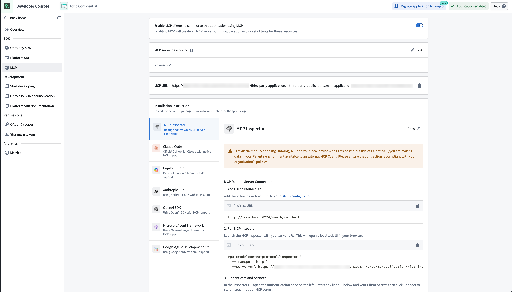
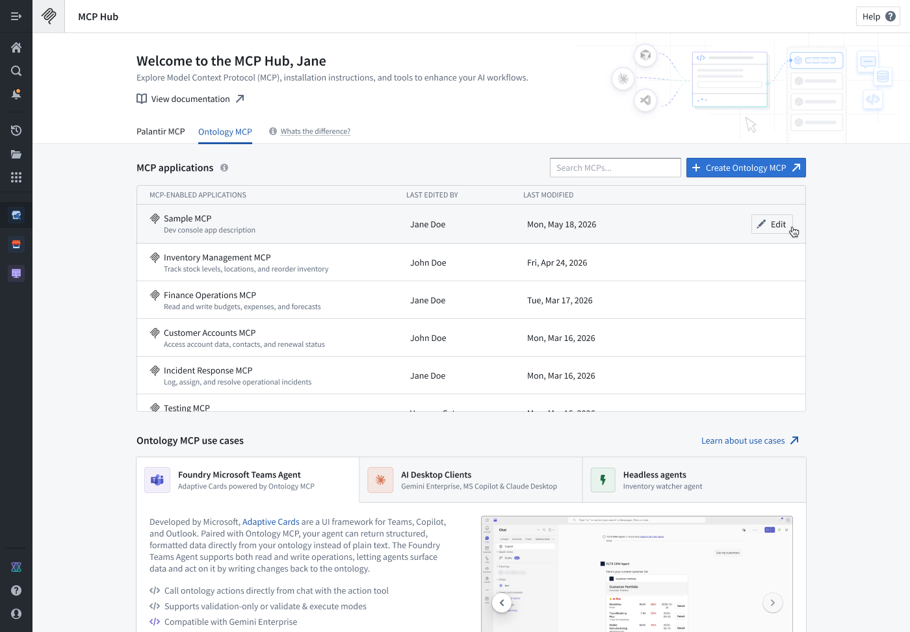

To enable Ontology MCP (OMCP) for your application:

:::callout{theme="neutral"} Even if your framework of choice is not listed, the configuration is likely similar assuming your framework can act as an MCP client. :::
Once enabled, your application will expose its ontology resources as MCP tools. External MCP clients can connect to your application using the connection details shown in the settings panel.
:::callout{theme="neutral"} Ensure your application has the appropriate application restrictions configured to control which ontology resources are accessible through MCP. :::
Ontology MCP servers are discoverable through the MCP Hub application. Open MCP Hub and navigate to the Ontology MCP tab to see a list of all MCP servers configured on your enrollment. Select any row to view the full configuration details for that server. From there, you can also jump directly into the corresponding Developer Console application to add or modify resources without leaving your workflow.
